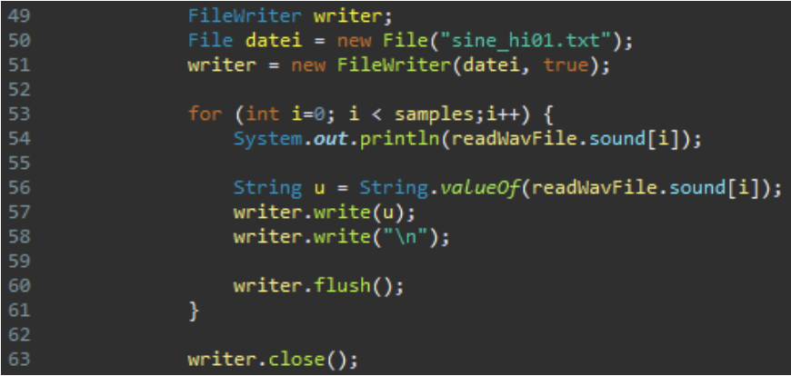
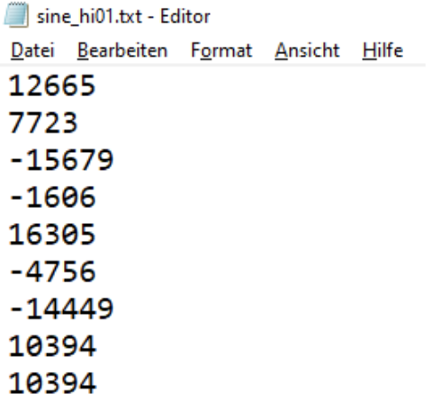
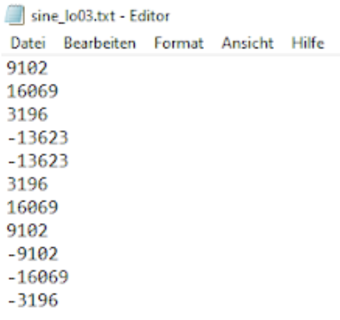
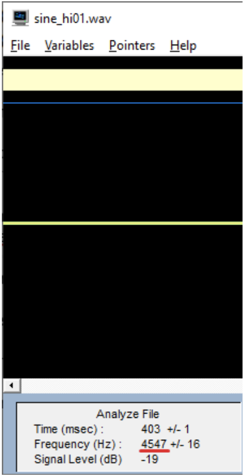
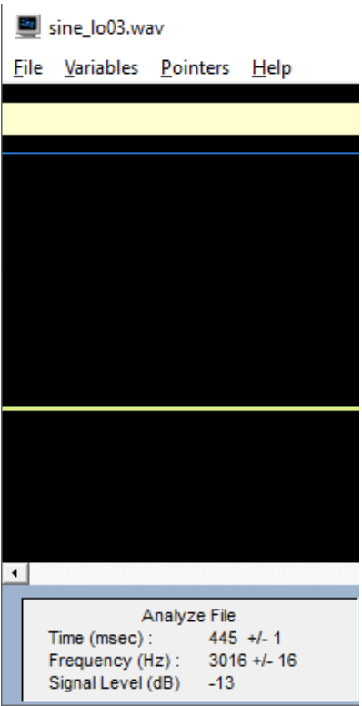
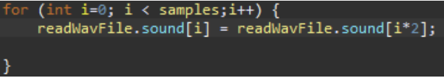
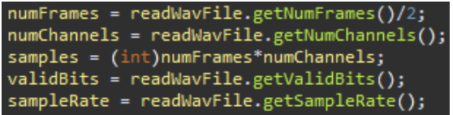
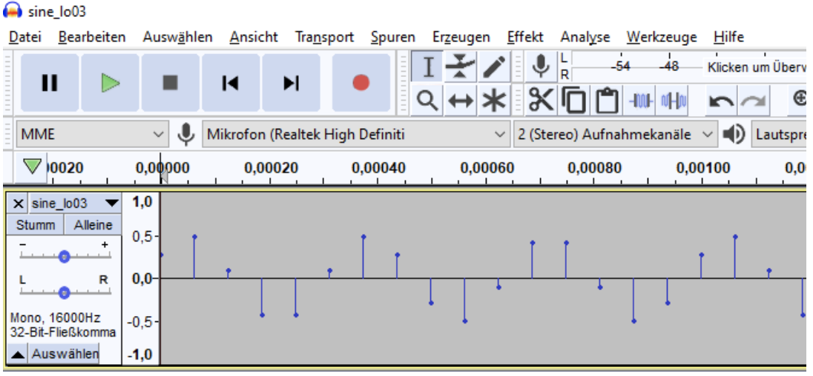
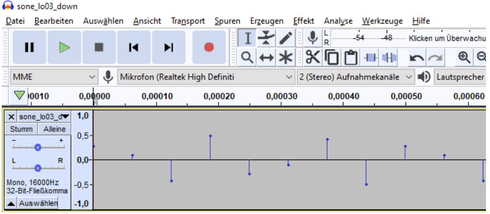
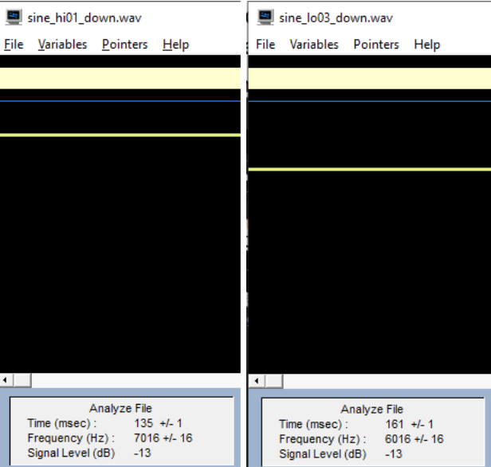

File f = new File("C:/Temp/test.txt");
BufferedWriter bufferedWriter = new BufferedWriter(new FileWriter(f));
bufferedWriter.write(readWavFile.sound[i]);
bufferedWriter.close();
1.1) (a)
Sprache
Musik
(b)
Die Abtastraten unterscheiden sich, da in der Musikdatei das
Spektrum größer ist bzw. mehr Frequenzhöhen(/-tiefen) abgebildet
werden - verglichen mit der reinen Sprachdatei.
(c)
Sprache.wav
Musik.wav
Channels
Die Sprachdatei besitzt nur mono Audio also nur
einen Audiokanal. Die Musikdatei besitzt zwei
Kanaele (Stereo).
Frames
Die Frames ist die Anzahl der Abtastpunkte, da die
Musikdatei eine hoehere Sample Rate hat also mehr
Abtastpunkte pro Sekunde hat sie auch eine hoehere
Anzahl and Frames.
Sample Rate
Abtastrate (die während der Digitalisierung
gespeicherten Punkte in bestimmten Abständen)
Valid Bits
Zur Speicherung benötigte Bits pro Sample
Bytes per Sample
Zur Speicherung benötigte Bytes pro Sample
(d)
Bitrate
Sprache2 x 44100 x 8 = 705.600
Musik1 x 8000 x 44,1 = 352.800
1.2) (a)
Code

Ausgabe in Datei sine_hi01

Ausgabe in Datei sine_lo03

Frequenz = 16 kHz = 16.000 Hz
Um die Frequenz abzulesen muss man die Amplitude ermitteln.
16.300 ist ca der groesste Wert und muss daher die Amplitude sein.
Jeder Wert in der Datei ist ein Sample also ist die Schwingungsdauer von einer Amplitude zur naechsten.
Da das Sample 10.394 zweimal hintereinander folgt ist davon auszugehen, dass die Amplitude genau zwischen diesen beiden Werten liegt.
Zaehlt man nun die Samles von einer zur naechsten Amplitude kommt man auf 3,5.
16.000 / 3,5 = 4571
Damit liegt die Frequenz der sine_hi01 bei ca. 4,5 kHz.
Das ganze Analog zur sine_lo03:
Von Sample 16.000 bis 16.000 zaehlt man 5 Samples.
16.000 / 5 = 3.200
Damit liegt die Frequenz der sine_hi03 bei ca 3.200 kHz.
(b)

Wie ausgerechnet ca. 4.500 Hz

Abweichung von 200 Hz zur Berechnung
(c)
Beim Abtasttheorem muss die Abtastfrequenz mindestens das
doppelte der Signalfrequenz sein. Der Grenzfall muss das
doppelte der Signalfrequenz sein, da man sonst mit den
Punkten keine richtige Rekonstruktion machen kann. Wenn die
Abtastfrequenz kleiner wäre, wäre die rekonstruierte
Signalfrequenz tiefer. Der Grenzfall waere bei 4Hz = 2Hz*2
(d)
Um kein Aliasing zu bekommen entfernt man, mit einem
Tiefpassfilter, die zu hohen Frequenzen am Anfang. Der
Tiefpassfilter filtert alle Frequenzen die größer als die Hälfte
der Signalfrequenz sind. Dann kann man den erhaltene Teil
spiegeln und rekonstruieren. Dadurch dass wir am Anfang ein
Tiefpass gemacht haben entstehen bei der späteren Abtastung keine
Aliasing, wodurch es dann keine Verzerrung im Audio gibt.
(e) (f) (g) 1.3) (a)
8 Bit-Auflösung:
SNR = 2^8/2 = 128-1
SNR = 127/0,5 = 254
SNR = 20log10(254) = 48,10dB
16 Bit-Auflösung:
SNR = 2^16/2 = 32768-1
SNR = 32767/0,5 = 65534
SNR = 20log10(65534) = 96,33dB
(b) (c)
Bei 8 Bit tritt eine deutlich hörbare Verschlechterung auf.
(d)
Das Geräusch ist als Rauschen zu erkennen, was natürlich die Klarheit des Signals stört.
Zusätzlich ist dieses Störgeräusch besonders gut bei leisen Signalen zu hören.
(e)
Ueberschreiben jedes zweiten Samples im Array um am ende ein Array mit der Haelfte an Samples zu erhalten:

Anpassen der Frames im Header (/2) (samples passt sich automatisch an)

sine_lo03 vor dem Downsampling:

sine_lo03 nach dem Downsampling:

kann eindeutig erkennen dass nach dem Downsampling jedes zweite Sample fehlt.
(f)
sine_hi01 hat sich durchs Downsampling auf 7000 Hz geandert sine_lo03 hat sich durchs Downsampling auf 6000 Hz geandert

(g)
Die Sprachdatei hoert sich nach dem Downsampling hoeher und schneller an.
Das liegt daran, dass wir die Haelfte der Samples weggeworfen haben.
An die Stelle der verworfenen Samples haben wir die Samples der zweiten Haelfte gesetzt.
Dadurch lauft die Datei in der Haelfte des Zeit ab. Gleichzeitig erhoeht sich dadurch die Frequenz da wir in der Haelfte der Zeit genauso viele Schwingungen haben.
 Sprache.wav
Sprache.wav
 Musik.wav
Musik.wav